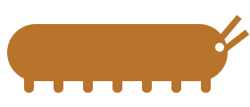

Origins
A very old family tree.
Velvet worms look a lot like animals known only from fossils, called lobopodians, which lived in the oceans over 500 million years ago. Today’s velvet worms live on land.
Scientists group them with arthropods (insects, spiders, crustaceans) and tardigrades, also called water bears. Together these animals share a distant common ancestor.
Relatives
- Arthropods
- Tardigrades
- Lobopodian fossils
Open a door
Anatomy
Soft, stretchy, and a little strange.
- Skin: velvety, covered in tiny bumps, and flexible.
- Legs: stubby, unjointed legs with claws. The number of pairs depends on the species.
- Head: one pair of antennae, simple eyes, and a mouth with small jaws.
- Slime glands: two short nubs near the mouth, called oral papillae, that shoot slime.
- Breathing: tiny openings in the skin lead to air tubes. They cannot be closed, so velvet worms dry out easily.
Open a door
Habitat
Damp, dark, and hidden.
Velvet worms live on land in humid places: under logs, in leaf litter, and in moist soil. Many live in tropical forests, and others live in cooler regions of the Southern Hemisphere. Most are active at night.
Because their bodies lose water quickly, they need constant moisture and shelter. That is why they stay hidden by day.
- Rotting logs
- Leaf litter
- Moist soil
- Rock crevices
Open a door
Feeding
Hunting with slime.
Velvet worms are carnivores. They eat small animals such as insects and spiders. To hunt, a velvet worm squirts sticky slime from the nubs near its mouth. The slime hardens into threads that trap the prey, and the worm then bites and feeds.
Some species also eat the dried slime afterward.
Open a door
Conservation
Small animals with big needs.
Velvet worms depend on stable, humid places, which makes them sensitive to change. Things that put them at risk:
- Deforestation
- Habitat fragmentation
- Drier, hotter climates
- Pollution
- Collecting
Protecting forest floors protects many other hidden animals too.
Open a door
Sources
This site is based on the Wikipedia article on Onychophora.
Further reading and viewing
Additional sources will be listed here.
Meet the velvet worm.
It has soft skin, stubby legs, and a way of hunting that sounds invented.
Velvet worms (the phylum Onychophora) are small, soft-bodied animals that live in damp forests. They are not true worms, and most people never see one. That is part of the fun: nature keeps plenty of surprises tucked away.
Open a door
Hover, focus, or tap a door to see what is hiding inside.
